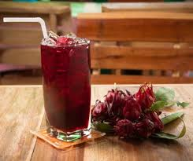

Rosa de Jamaica
Permíteme presentarte una bebida refrescante y deliciosa: la rosa de Jamaica. Esta bebida, conocida también como "agua de flor de Jamaica", es popular en Guatemala y en muchas otras partes del mundo por su sabor único y sus propiedades refrescantes.
La rosa de Jamaica se elabora a partir de las flores secas de la planta de hibisco, conocida como "flor de Jamaica". Las flores se infusionan en agua caliente junto con azúcar para crear una bebida refrescante de color rojo brillante con un sabor agridulce característico.
La rosa de Jamaica es perfecta para disfrutar en cualquier momento del día, ya sea como una bebida refrescante en un día caluroso o como un acompañamiento delicioso para tus comidas favoritas. ¡No pierdas la oportunidad de probar esta bebida tradicional guatemalteca y disfrutar de su sabor único y refrescante!
esta disponible por tan solo Q15.00
